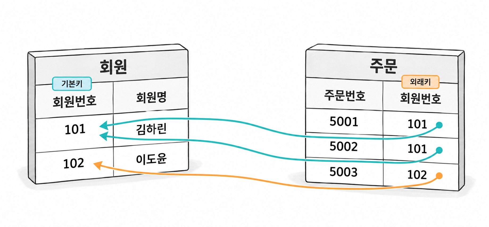

1장. 관계형 데이터베이스와 DBMS란?
1. 데이터를 관리하는 DBMS의 역할
1.1 파일 저장과 데이터베이스 관리의 차이
데이터베이스(database)는 서로 관련된 데이터를 체계적으로 모아 관리하는 집합입니다. 데이터베이스 관리 시스템(Database Management System, DBMS)은 데이터를 저장하고 조회하며 변경하는 소프트웨어입니다. 데이터베이스가 관리 대상인 데이터라면, DBMS는 그 데이터를 관리하는 프로그램입니다. Oracle Database는 DBMS에 해당합니다.
주문 서비스에서 회원 정보와 주문 내역을 CSV 파일로 관리한다고 가정하겠습니다. 프로그램은 파일을 읽어 회원을 찾고, 주문 내용을 추가한 뒤 파일을 다시 저장합니다. 혼자 사용하는 작은 프로그램이라면 이 방법으로도 필요한 기능을 만들 수 있습니다.
사용자와 프로그램이 늘어나면 데이터를 저장하는 일 외에도 문제가 생깁니다. 두 프로그램이 같은 파일을 읽고 각각 수정하면, 나중에 저장한 내용이 먼저 저장한 내용을 덮어쓸 수 있습니다. 주문을 저장하는 도중 프로그램이 종료되면 일부 정보만 남을 수도 있습니다.
파일을 사용할 때도 이런 문제를 해결할 수 있습니다. 다만 잠금, 입력 검증, 장애 대응 등을 프로그램에서 직접 구현해야 합니다. DBMS는 여러 프로그램이 함께 데이터를 다루도록 공통 관리 기능을 제공합니다.
| 관리할 문제 | 파일을 직접 관리할 때 | DBMS를 사용할 때 |
|---|---|---|
| 원하는 데이터 찾기 | 파일을 읽고 검색하는 로직을 작성합니다. | SQL로 조회 조건을 전달합니다. |
| 잘못된 값 입력 막기 | 파일을 수정하는 프로그램마다 검사합니다. | 제약조건으로 공통 규칙을 적용할 수 있습니다. |
| 동시 변경 조정 | 잠금과 충돌 처리 방식을 직접 정합니다. | DBMS의 동시성 제어 기능을 사용합니다. |
| 장애 뒤 데이터 복구 | 백업과 복구 절차를 직접 마련합니다. | DBMS의 로그와 백업·복구 기능을 활용합니다. |
DBMS도 실제 데이터를 저장할 때 파일을 사용합니다. 차이는 파일의 유무보다 데이터 접근과 변경을 누가 관리하는가에 있습니다. 애플리케이션은 DBMS에 작업을 요청합니다. DBMS는 저장 구조와 관리 규칙에 따라 요청한 작업을 수행합니다.
1.2 데이터 독립성·무결성·동시성·복구
DBMS의 역할은 데이터를 오래 보관하는 데서 끝나지 않습니다. 저장 방식이 바뀌어도 프로그램이 받는 영향을 줄이고, 여러 사용자가 데이터를 정확하게 다루도록 도와야 합니다.
데이터 독립성(data independence)은 데이터 구조나 저장 방식의 변경이 다른 부분에 미치는 영향을 줄이는 성질입니다. 예를 들어 조회 속도를 높이려고 인덱스를 추가하더라도, 같은 결과를 요청하는 SQL은 대체로 그대로 사용할 수 있습니다.
저장 방식이 바뀌는 경우와 테이블의 의미가 바뀌는 경우는 구분해야 합니다. 컬럼을 삭제하거나 의미를 바꾸면 해당 컬럼을 사용하는 프로그램도 수정해야 할 수 있습니다. 데이터 독립성이 모든 변경의 영향을 없애 주는 것은 아닙니다.
무결성(integrity)은 데이터가 정해진 규칙에 맞는 상태를 유지하는 성질입니다. 주문번호는 중복되지 않아야 하고, 주문 수량은 양수여야 한다는 조건이 이에 해당합니다.
DBMS에 제약조건(constraint)을 정의하면 여러 프로그램에 같은 규칙을 적용할 수 있습니다. 다만 DBMS가 업무 규칙을 스스로 알아내지는 않습니다. 어떤 값을 허용하고 어떤 관계를 유지할지는 설계자가 정해야 합니다.
동시성(concurrency)은 여러 사용자가 같은 시간에 데이터에 접근하는 특성입니다. DBMS는 동시 접근 중에도 데이터가 일관된 상태를 유지하도록 조정합니다.
재고가 한 개인 상품을 두 사람이 동시에 구매한다고 가정하겠습니다. 두 요청이 모두 재고를 확인했다고 해서 두 주문을 모두 허용해서는 안 됩니다. DBMS의 잠금 기능과 적절한 변경 로직을 함께 사용해야 합니다. DBMS를 사용한다는 이유만으로 동시 처리 문제가 모두 해결되지는 않습니다.
Oracle은 잠금과 읽기 일관성 기능으로 동시 조회와 변경을 조정합니다. 읽기 일관성은 조회 도중 다른 사용자가 데이터를 바꾸더라도, 해당 조회가 일관된 시점의 데이터를 보도록 하는 성질입니다.
복구(recovery)는 장애 이후 데이터를 일관된 상태로 되돌리는 작업입니다. 처리 중이던 변경과 완료된 변경을 구분하고, 장애의 종류에 따라 로그나 백업을 이용합니다.
프로그램이 중단된 경우와 저장장치가 손상된 경우에는 복구 방법이 다릅니다. 따라서 DBMS의 복구 기능을 사용하더라도 백업과 복구 절차를 준비해야 합니다. 복구 기능이 있어도 실제 복구를 위한 준비는 따로 필요합니다.
2. 관계형 데이터 모델
2.1 테이블·행·속성과 관계
데이터 모델(data model)은 데이터를 어떤 구조로 표현하고 어떤 규칙으로 다룰지 정하는 방식입니다. 관계형 데이터 모델(relational data model)은 데이터를 릴레이션으로 표현합니다. 릴레이션(relation)은 속성과 튜플로 이루어진 수학적 구조입니다. 데이터베이스에서는 릴레이션을 테이블 형태로 표현합니다.
주문 서비스에서 회원을 관리한다면 다음과 같이 표현할 수 있습니다.
회원 테이블
| 회원번호 | 회원명 | 연락처 |
|---|---|---|
| 101 | 김하린 | 010-0000-0101 |
| 102 | 이도윤 | 010-0000-0102 |
테이블(table)은 회원처럼 같은 종류의 대상을 일정한 구조로 기록합니다. 행(row) 하나는 회원 한 명에 해당합니다. 속성(attribute)은 대상의 특징이며, 테이블에서는 컬럼(column)으로 표현합니다. 회원번호, 회원명, 연락처가 각각 속성입니다.
테이블을 설계할 때는 먼저 한 행이 무엇을 뜻하는지 정해야 합니다. 회원 테이블의 한 행이 회원 한 명을 뜻한다면, 특정 행에만 주문 한 건을 기록해서는 안 됩니다. 행의 의미가 섞이면 값을 해석하고 조회하기 어려워집니다.
주문은 회원과 별도의 테이블에 기록할 수 있습니다.
주문 테이블
| 주문번호 | 회원번호 | 주문일자 |
|---|---|---|
| 5001 | 101 | 2026-10-01 |
| 5002 | 101 | 2026-10-03 |
| 5003 | 102 | 2026-10-03 |
회원 101이 주문을 두 번 했으므로 주문 테이블에는 회원번호 101이 두 번 나타납니다. 두 행은 같은 회원의 서로 다른 주문입니다.
여기서 릴레이션이라는 용어와 회원·주문 사이의 업무 관계를 구분해야 합니다. 릴레이션은 테이블로 표현하는 데이터 구조를 뜻합니다. “회원이 주문한다”는 두 대상 사이의 업무 관계입니다.
테이블의 행에는 기본 순서가 없습니다. 위 표에 주문번호 순으로 적혀 있더라도 조회 결과가 항상 그 순서로 나오지는 않습니다. 결과 순서가 필요하면 SQL의 ORDER BY로 지정해야 합니다.
2.2 키로 연결하고 SQL로 조회하는 원리
키(key)는 행을 식별하거나 테이블 사이의 참조를 표현하는 데 사용하는 컬럼 또는 컬럼의 조합입니다.
기본키(Primary Key, PK)는 테이블에서 각 행을 구별하도록 선택한 키입니다. 기본키 값은 중복될 수 없고 비어 있을 수도 없습니다. 앞의 회원 테이블에서는 회원번호가 기본키 역할을 합니다.
회원명은 기본키로 사용하기 어렵습니다. 이름이 같은 회원이 있을 수 있기 때문입니다. 주문을 연결할 때도 이름 대신 회원번호를 사용하면 어느 회원의 주문인지 구별할 수 있습니다.
외래키(Foreign Key, FK)는 다른 행의 키를 참조하도록 정의한 키입니다. 앞의 주문 테이블에서는 회원번호를 외래키로 정의해 회원 테이블의 회원번호를 참조할 수 있습니다. 외래키 제약조건이 활성화되어 적용되면, 존재하지 않는 회원번호를 주문에 기록하지 못하게 막을 수 있습니다.

그림 1-1에서 주문 5001과 5002는 같은 회원을 참조합니다. 회원명을 주문마다 반복해서 기록하지 않아도 회원번호로 회원 정보를 찾을 수 있습니다.
두 테이블의 데이터를 함께 조회할 때는 조인(join)을 사용합니다. 다음 SQL은 앞의 표를 각각 members와 orders라는 테이블로 구현했다고 가정한 코드 조각입니다. 컬럼 이름은 회원번호 member_id, 회원명 member_name, 주문번호 order_id로 정했습니다.
코드 조각
SELECT o.order_id,
m.member_name
FROM orders o
JOIN members m
ON m.member_id = o.member_id
ORDER BY o.order_id;ON 뒤의 조건은 두 테이블에서 회원번호가 같은 행을 연결한다는 뜻입니다. 주문번호는 주문 테이블에서, 회원명은 회원 테이블에서 가져옵니다.
외래키와 조인은 역할이 다릅니다. 외래키는 저장된 데이터가 참조 규칙을 따르도록 합니다. 조인은 조회할 때 어떤 조건으로 행을 연결할지 정합니다. 외래키가 없어도 조인을 작성할 수 있지만, 조인만으로 잘못된 참조를 막지는 못합니다.
SQL은 필요한 결과를 기술하는 선언형 언어(declarative language)입니다. 위 SQL은 어떤 데이터를 어떤 조건으로 연결할지 지정합니다. 데이터를 읽는 구체적인 접근 방법은 DBMS가 결정합니다. 같은 결과를 만드는 방법이라도 실제로 읽는 데이터의 양과 처리 비용은 달라질 수 있습니다.
3. 설계와 튜닝의 관계
3.1 개념적·논리적·물리적 모델링
데이터베이스 설계는 CREATE TABLE을 작성하기 전부터 시작됩니다. 무엇을 관리하고 어떤 규칙을 지켜야 하는지 먼저 정해야 합니다. 이 요구사항을 데이터 구조로 구체화하는 작업이 데이터 모델링(data modeling)입니다.
개념적 모델링(conceptual modeling)에서는 관리할 주요 대상과 업무 관계를 찾습니다. 주문 서비스라면 회원과 주문을 구분하고, “회원은 주문할 수 있다”는 관계를 정합니다. 이 단계에서는 Oracle의 데이터 타입이나 인덱스보다 업무 의미에 집중합니다.
논리적 모델링(logical modeling)에서는 대상을 구체적인 데이터 구조로 바꿉니다. 관계형 모델을 사용한다면 테이블, 속성, 키와 참조 관계를 정합니다. 회원 한 명이 여러 주문을 할 수 있다는 규칙을 표현합니다. 같은 사실이 불필요하게 중복되는지도 검토합니다.
물리적 모델링(physical modeling)에서는 선택한 DBMS에 맞게 구현 방법을 정합니다. 이 책에서는 Oracle Database 21c를 기준으로 컬럼의 데이터 타입, 인덱스와 저장 구조 등을 선택합니다.
| 단계 | 중심 질문 | 주문 서비스의 설계 예 |
|---|---|---|
| 개념적 모델링 | 무엇을 관리하며 서로 어떤 관계인가? | 회원과 주문을 관리하고, 회원이 주문한다는 관계를 정합니다. |
| 논리적 모델링 | 각 행에 무엇을 기록하고 어떻게 연결하는가? | 회원·주문 테이블의 속성과 기본키·외래키를 정합니다. |
| 물리적 모델링 | Oracle에서 어떤 객체와 저장 방식으로 구현하는가? | 컬럼 타입과 필요한 인덱스 등을 정합니다. |
세 단계는 설계를 바라보는 관점을 구분한 것입니다. 실제 작업에서는 앞 단계로 돌아가 수정하기도 합니다. 물리 설계 중 주문 조회 방식을 검토하다가, 논리 모델에 필요한 속성이 빠졌다는 사실을 발견할 수 있습니다.
설계한 테이블과 제약조건 등을 실제 데이터베이스에 생성하는 작업은 구현입니다. 테이블 생성에 성공했다고 해서 설계 검토까지 끝난 것은 아닙니다. 업무 규칙에 맞는 데이터를 저장하고 필요한 결과를 조회할 수 있는지 확인해야 합니다.
3.2 정확성·조회 성능·변경 비용의 균형
데이터베이스 설계에서는 정확성, 조회 성능, 변경 비용을 함께 검토해야 합니다. 정확성은 반드시 지켜야 할 조건입니다. 성능을 높이더라도 필요한 데이터가 빠지거나 잘못된 결과가 나오면 요구사항을 만족한 개선이 아닙니다.
튜닝(tuning)은 측정 가능한 성능 목표에 맞도록 병목을 찾고 개선하는 작업입니다. “빠르게 만든다”보다 “회원의 최근 주문 20건을 목표 응답 시간 안에 조회한다”처럼 대상과 기준을 구체적으로 정해야 합니다.
주문 조회에 필요한 속성을 모두 설계했어도 주문량이 늘면 조회가 느려질 수 있습니다. 이때 SQL과 인덱스를 개선할지, 데이터 구조를 바꿀지 판단합니다. 구조를 바꾸면 조회 외의 작업에도 영향을 줄 수 있습니다.
| 선택 | 기대하는 효과 | 함께 검토할 비용과 위험 |
|---|---|---|
| 회원과 주문을 분리하고 키로 연결합니다. | 회원 정보를 한곳에서 관리합니다. | 주문과 회원 정보를 함께 볼 때 조인이 필요합니다. |
| 조회에 맞는 인덱스를 추가합니다. | 필요한 데이터를 찾는 읽기량을 줄일 수 있습니다. | 저장공간과 데이터 변경 시 유지 비용이 늘어납니다. |
| 자주 필요한 집계값을 별도로 저장합니다. | 조회 때 반복하는 계산을 줄일 수 있습니다. | 원본 변경을 반영하고 집계값을 검증해야 합니다. |
조회가 빠른 구조도 데이터를 추가하거나 수정할 때는 더 많은 작업을 요구할 수 있습니다. 반대로 변경하기 편한 구조가 모든 조회에 유리한 것은 아닙니다. 주요 조회와 데이터 변경을 함께 검토해야 합니다.
요구사항 변경에 드는 비용도 설계의 일부입니다. 처음에는 주문 하나를 한 주소로만 배송하더라도, 나중에는 상품을 나누어 배송해야 할 수 있습니다. 기존 구조를 바꾸면 테이블뿐 아니라 조회 SQL과 데이터 입력 로직도 영향을 받습니다. 기존 데이터를 변환하는 작업에도 영향이 생깁니다.
그렇다고 미래의 모든 요구를 예상해 구조를 복잡하게 만들 필요는 없습니다. 현재 확인된 업무 규칙을 정확하게 표현하고, 설계에 사용한 가정을 기록합니다. 변경이 생기면 어떤 가정이 달라졌는지부터 확인합니다.
설계는 튜닝의 출발 조건을 만듭니다. 튜닝에서 얻은 측정 결과는 설계를 다시 판단할 근거가 됩니다. 두 작업을 연결하려면 먼저 데이터의 의미를 이해해야 합니다. 그 의미를 유지하면서 처리 비용을 줄여야 합니다.